Java SE 6 Update 10 -Deployment
This release introduces a new (default) implementation of the Java
Plug-in that provides support for applets in the web browser. The next
generation Java Plug-in combines the best architectural features of
applet and Java Web Start technologies.
Expected duration: 90 minutes
(excluding homework)
Resources
Change Log
- Nov. 5th, 2009: Created
- Oct. 4th, 2011: JavaFX related exercises are removed for now.
(Sang Shin)
- Oct. 22nd, 2011: Exercise 2 and 3 are added (Sang Shin)
Lab Exercises
Exercise 0: Configure JRE 6 Update 10 (or
later version) with Firefox browser 3.x
(0.1)
Verify that JRE 6
update 10 is installed
1. Display Java control panel
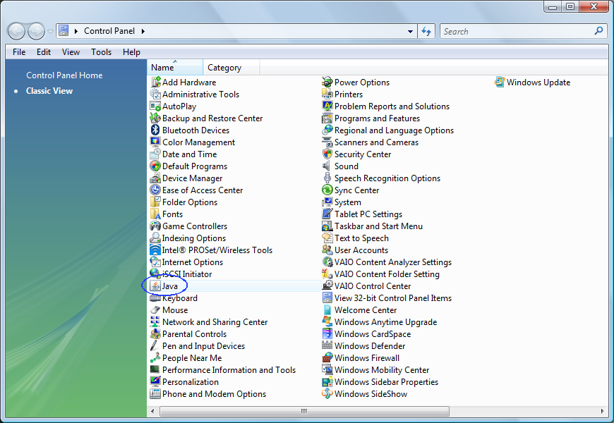
If you somehow do not see the Java
icon in the control panel - for example, if you are running 64bit JDK
over Windows 64 bit Vista, you might not see the Java icon -, enter "
javaws -viewer" in the terminal
window as a workaround.
2. View Java runtime environment setting. Make sure Java SE
update 10 or later version is configured.
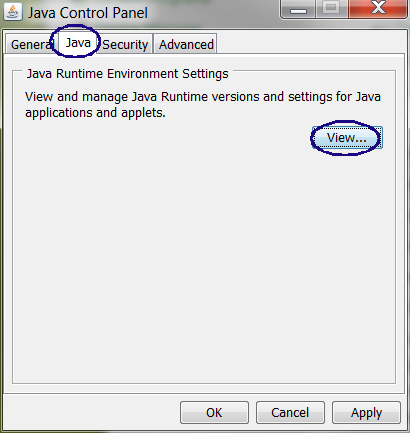
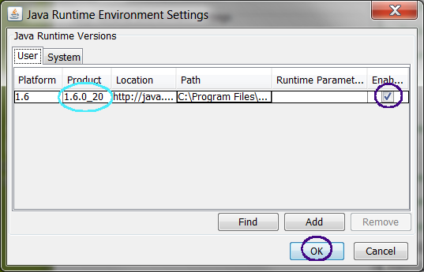
return
to
top of the
exercise
(0.2)
Download and install Firefox
Version 3 (if it has not been done yet)
(0.3)
Verify that
Firefox is configured with JRE 6 Update 10 (or later version)
1. In the URL field, enter about:plugins.
2. Verify that Java(TM) Platform SE 6 U1x plug-in has been installed.
Exercise 1: Java Deployment Toolkit
In this exercise, you are study
JavaScript functions that are provided as part of Java Deployment
Toolkit. For detailed information on Java Deployment Kit, please go to
Java
Web App Deployment Advice for JavaSE 6u10 document. For the
functions that can be called against deployJava Javascript object,
please read
this.
The
deployJava.js exposes a
single object, named deployJava, which contains the following public
functions:
- getJREs() - Returns a
list of currently-installed JRE versions.
- installLatestJRE() -
Triggers the installation of the latest JRE
- installJRE(requestVersion) -
Triggers the installation of the specified requestVersion, the latest
version matching the specified requestVersion, or the latest JRE.
- versionCheck(version) -
Returns true if there is a matching JRE version currently installed
(among those detected by getJREs()).
- writeAppletTag(attributes,
parameters) - Outputs an applet tag with the specified
attributes and parameters. The parameters argument is optional.
- runApplet(attributes,
parameters, minimumVersion) - Ensures that an appropriate JRE is
installed and then runs an applet.
- isWebStartInstalled(minimumVersion)
- Returns true if an installation of Java Web Start of the
specified minimumVersion is found.
- createWebStartLaunchButton(jnlp,
minimumVersion) - Outputs a launch button for the specified JNLP
URL. When clicked, the button will ensure that an appropriate JRE is
installed and then launch the JNLP application.
- setInstallerType(type) -
Sets the preferred install type : null, online, kernel.
- setAdditionalPackages(packageList)
- Sets additional package list to be used by kernel
installer.
You need an internet connection to do these exercises.
(1.1)
Check JRE versions installed
1. Create
TestJavaDeploymentToolkit.html
to the
DummyWebapp application
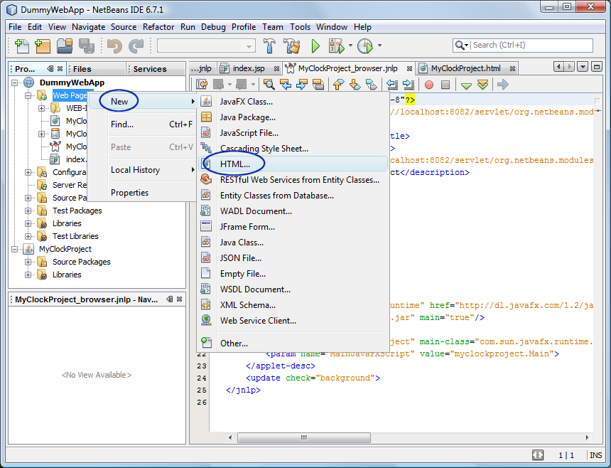
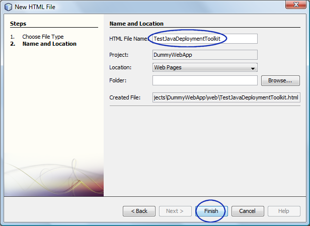
2. Modify
TestJavaDeploymentToolkit.html
with the one below.
<!DOCTYPE HTML PUBLIC
"-//W3C//DTD HTML 4.01 Transitional//EN">
<html>
<head>
<title></title>
<meta
http-equiv="Content-Type" content="text/html; charset=UTF-8">
<script
src="http://java.com/js/deployJava.js"></script>
<script>
// Display list of currently-installed JRE versions
console.log("JREs installed = %s", deployJava.getJREs());
// Check if there is a matching JRE version currently installed
console.log("JRE 1.6.0_14 installed = %s",
deployJava.versionCheck("1.6.0_14"));
console.log("JRE 1.6.0_13 installed = %s",
deployJava.versionCheck("1.6.0_13"));
console.log("JRE 1.6.0_2 installed = %s",
deployJava.versionCheck("1.6.0_2"));
console.log("JRE 1.5.0_09 installed = %s",
deployJava.versionCheck("1.5.0_09"));
console.log("JRE 1.4.0_12 installed = %s",
deployJava.versionCheck("1.4.0_12"));
</script>
</head>
<body>
Enable Firebug to see the
messages being displayed!
</body>
</html>
|
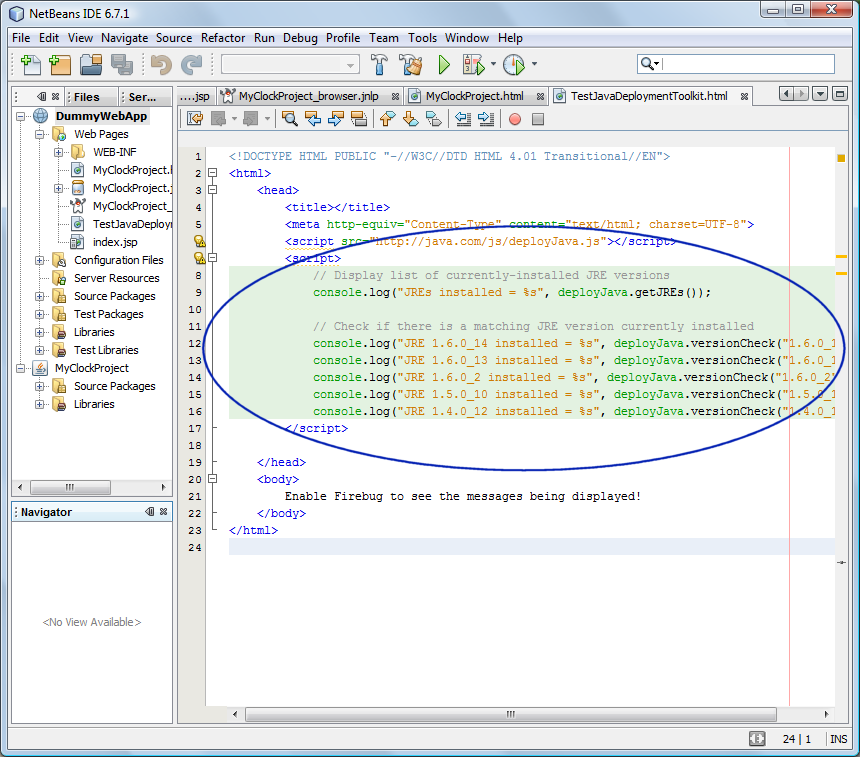
3. Redeploy the
DummyWebapp
application.
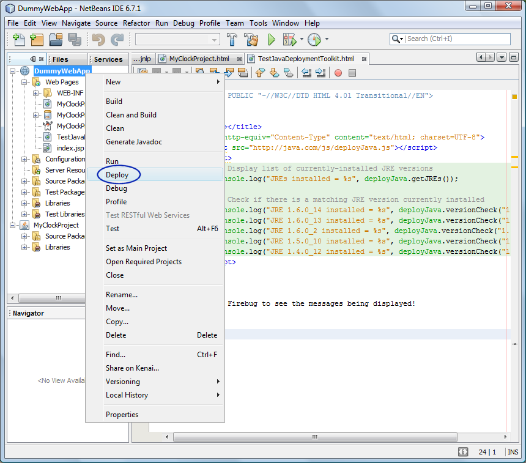
4. Test the Java Development Toolkit functions.
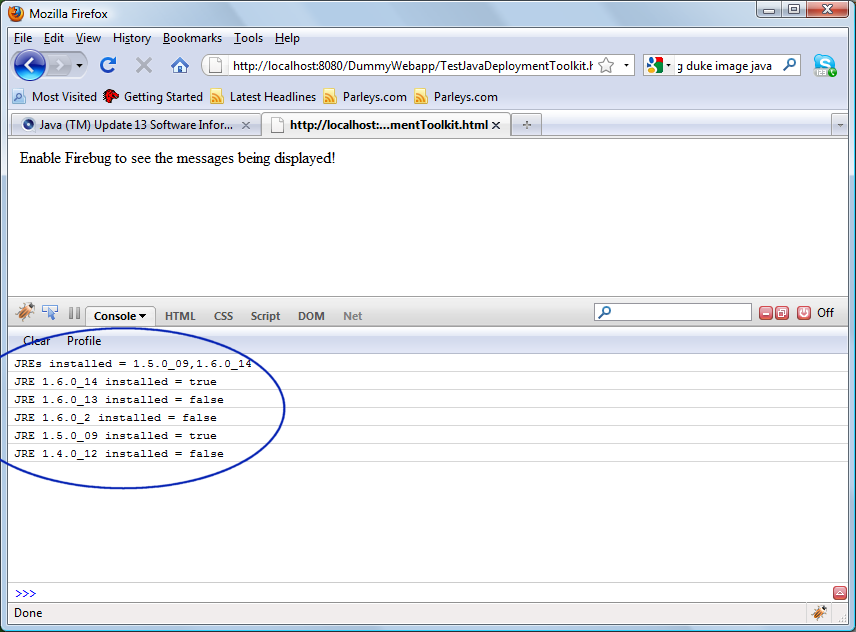
return
to
top of the
exercise
(1.2)
Install a new JRE
1. Create
TestJavaDeploymentToolkit2.html
to the
DummyWebapp application.
2. Modify
TestJavaDeploymentToolkit2.html
with the one below.
<html>
<head>
<title></title>
<meta
http-equiv="Content-Type" content="text/html; charset=UTF-8">
<script
src="http://java.com/js/deployJava.js"></script>
<script>
// Display list of currently-installed JRE versions
console.log("JREs installed = %s", deployJava.getJREs());
var my_jre_version = "1.5.0_10";
// Check if there is a matching JRE version currently installed
console.log("JRE %s installed = %s", my_jre_version,
deployJava.versionCheck(my_jre_version));
// Install a version of JRE you don't have'
deployJava.installJRE(my_jre_version);
// Check if the new version has been installed
console.log("JRE %s installed = %s", my_jre_version,
deployJava.versionCheck(my_jre_version));
</script>
</head>
<body>
Enable Firebug to see the
messages being displayed!
</body>
</html>
|
3. Redeploy the
DummyWebapp
application.
4. Test the Java Development Toolkit functions.
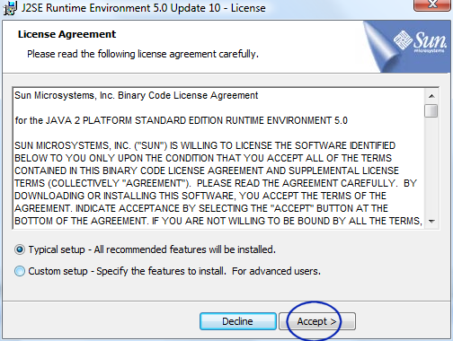
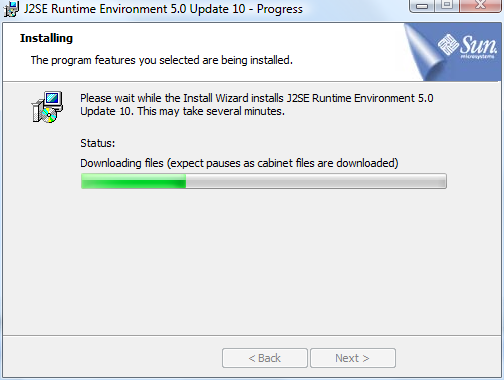
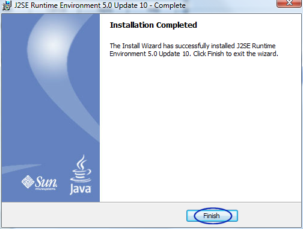
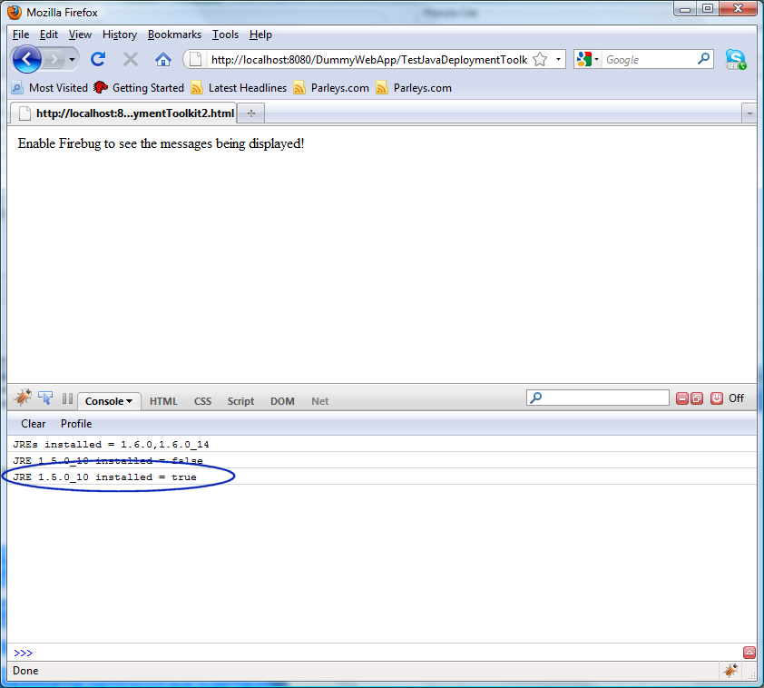
return
to
top of the
exercise
return
to
top
Exercise 2: Launching Applet through JNLP
Learning points:
- Applet can be launched through JNLP (this is a new feature
enabled by new Java plug-in the browser)
Tasks to be performed:
(2.1)
Create a jar file from Applet source code
1. Create a jar file that contains the
applet class.
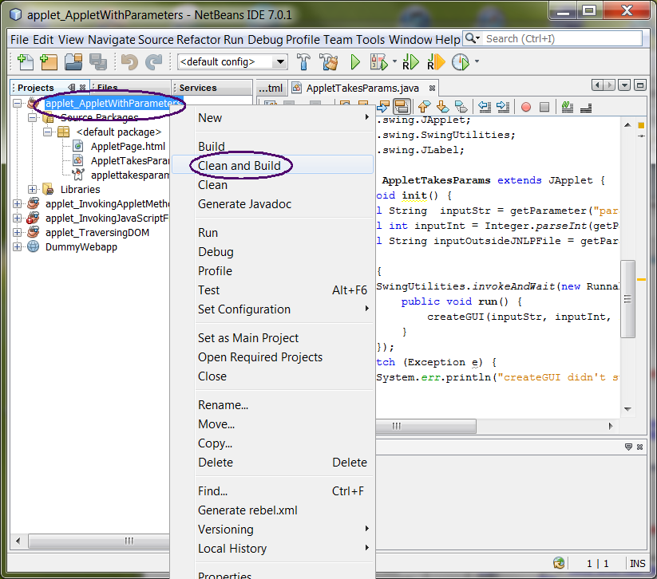
2. Verify that the jar file has been created.
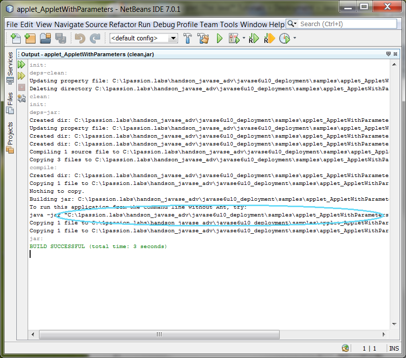
3. Verify that the following files are present under ./dist/ directory.
- AppletPage.html
- applettakesparams.jnlp
- applet_AppletWithParameters.jar
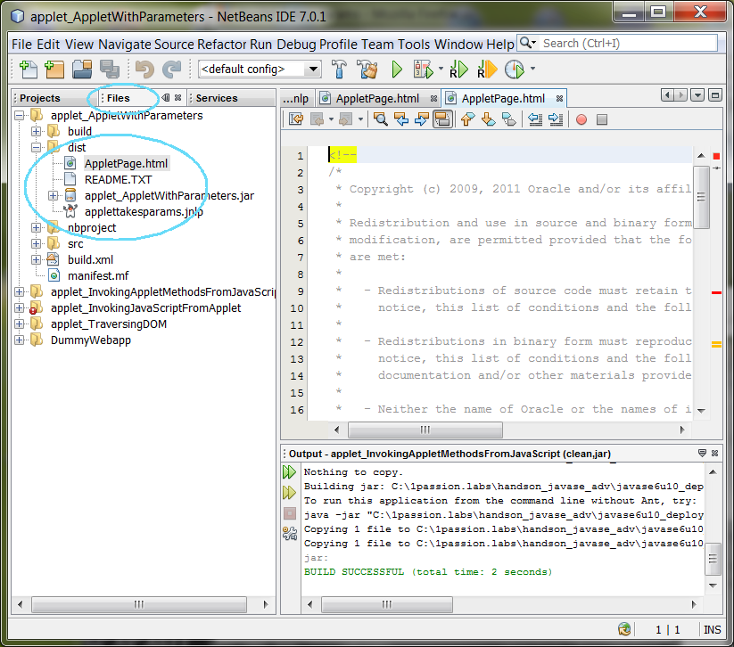
4. .Using your browser access the
AppletPage.html in your file stystem.
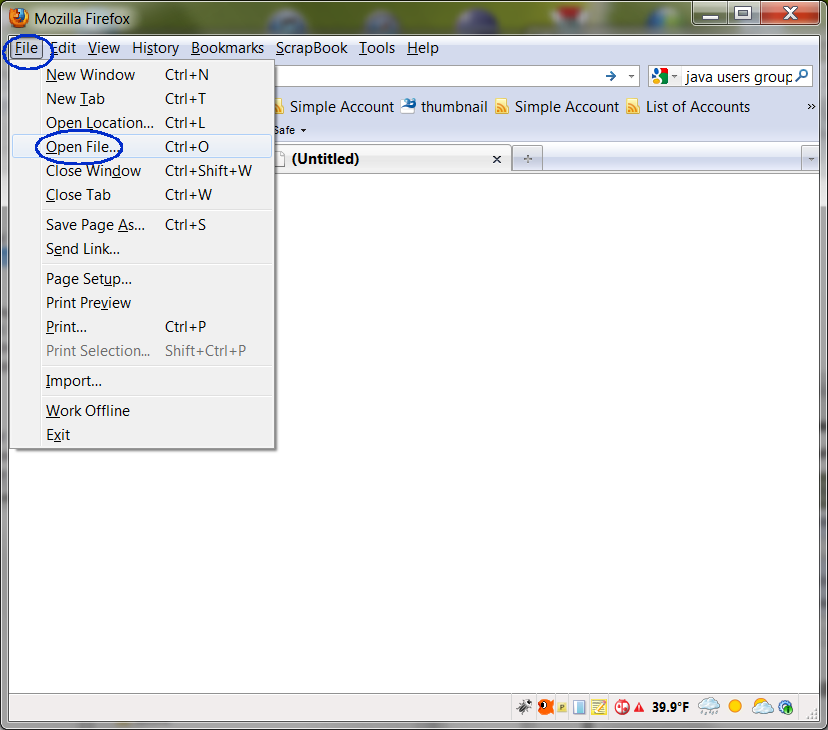
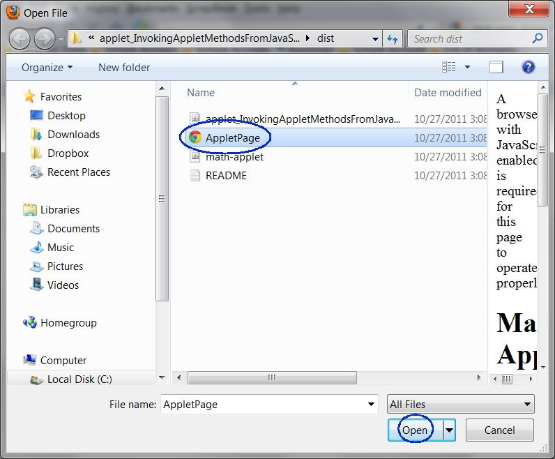
5. Observe the applet is being displayed.
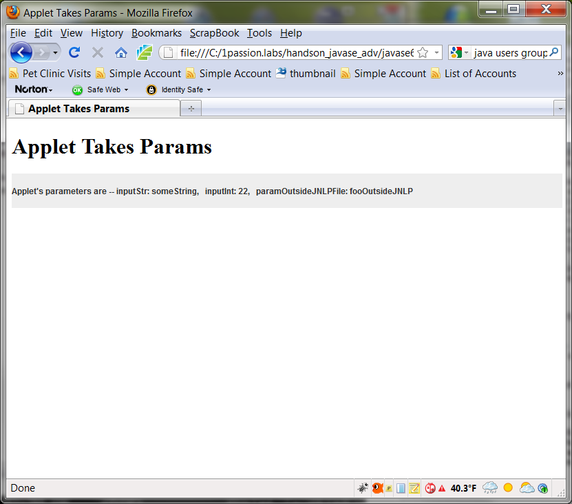
return
to
top of the
exercise
(2.2)
Study code
1. Applet - AppletTakesParams.java
import javax.swing.JApplet;
import javax.swing.SwingUtilities;
import javax.swing.JLabel;
public class AppletTakesParams extends JApplet {
public void init() {
final String inputStr =
getParameter("paramStr");
final int inputInt = Integer.parseInt(getParameter("paramInt"));
final String inputOutsideJNLPFile =
getParameter("paramOutsideJNLPFile");
try {
SwingUtilities.invokeAndWait(new Runnable() {
public void run() {
createGUI(inputStr, inputInt, inputOutsideJNLPFile);
}
});
} catch (Exception e) {
System.err.println("createGUI didn't successfully complete");
}
}
private void createGUI(String inputStr, int
inputInt, String inputOutsideJNLPFile) {
String text = "Applet's
parameters are -- inputStr: " + inputStr +
", inputInt: " + inputInt +
", paramOutsideJNLPFile: " + inputOutsideJNLPFile;
JLabel lbl = new
JLabel(text);
add(lbl);
}
}
|
2. JNLP file -
applettakesparams.jnlp.
<?xml version="1.0" encoding="UTF-8"?>
<jnlp spec="1.0+" codebase="" href="">
<information>
<title>Applet Takes
Params</title>
<vendor>Dynamic
Team</vendor>
</information>
<resources>
<!-- Application
Resources -->
<j2se version="1.6+"
href="http://java.sun.com/products/autodl/j2se"/>
<jar href="applet_AppletWithParameters.jar"
main="true" />
</resources>
<applet-desc
name="Applet Takes
Params"
main-class="AppletTakesParams"
width="800"
height="50">
<param name="paramStr"
value="someString"/>
<param name="paramInt" value="22"/>
</applet-desc>
<update check="background"/>
</jnlp>
|
3. HTML file that hosts the applet -
AppletPage.html.
<!DOCTYPE HTML PUBLIC "-//W3C//DTD HTML 4.01 Transitional//EN">
<html lang="en-US">
<head>
<title>Applet Takes Params</title>
<meta http-equiv="Content-Type"
content="text/html; charset=windows-1252">
</head>
<body>
<noscript>A browser with JavaScript enabled is
required for this page to operate properly.</noscript>
<h1>Applet Takes Params</h1>
<script
src="http://www.java.com/js/deployJava.js"></script>
<script>
var attributes = {
code:'AppletTakesParams.class',
archive:'applet_AppletWithParameters.jar', width:800, height:50} ;
var parameters = {jnlp_href:
'applettakesparams.jnlp', paramOutsideJNLPFile:
'fooOutsideJNLP'} ;
deployJava.runApplet(attributes, parameters, '1.6');
</script>
</body>
</html>
|
return
to
top of the
exercise
return
to
top
Exercise 3: Applet and JavaScript
interaction
JavaScript code on a web page can interact with Java applets
embedded on the page. JavaScript code can perform operations such as
the following:
- Invoke methods on Java objects
- Get and set fields in Java objects
- Get and set Java array elements
- Create new instances of Java objects
Tasks to be performed
(3.1)
Create jar file from applet java source files
1. Create jar file that contains the
applet class.
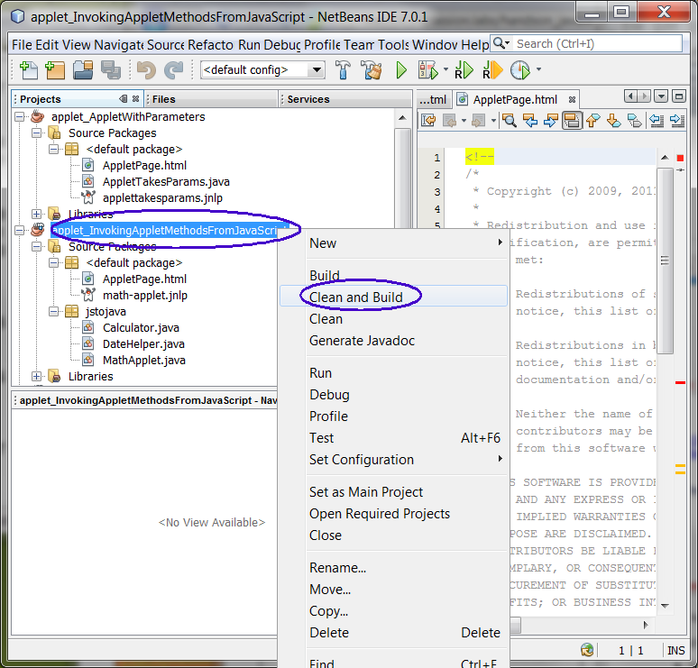
2. Verify that the files are present.
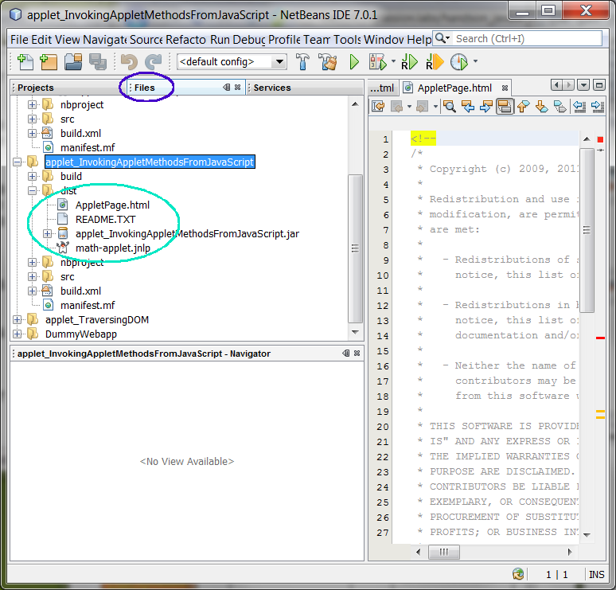
3. .Using your browser access the
AppletPage.html in your file stystem.
4. Run applet
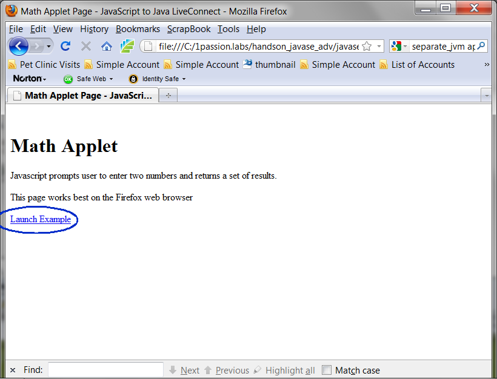
- Enter a number - like 5.
- Click OK
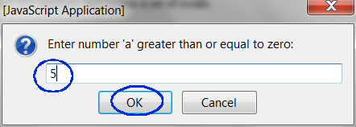
5. Observe that dialog box gets displayed.
- Enter a number - like 7.
- Click OK
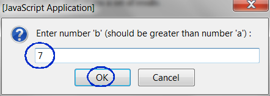
6. Observe that the result is displayed in the page.
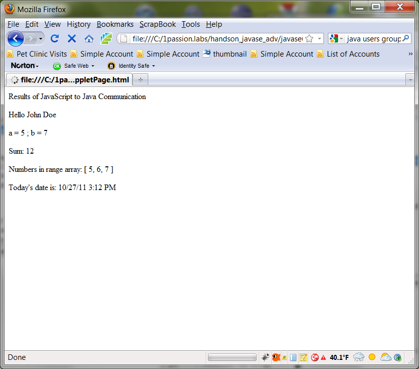
return
to
top of the
exercise
(3.2)
Study the code
1. Applet - math-applet.java
package jstojava;
import java.applet.Applet;
public class MathApplet extends Applet{
public String userName = null;
public String getGreeting() {
return "Hello " + userName;
}
public Calculator getCalculator() {
return new Calculator();
}
}
|
2. Caculator.java
package jstojava;
public class Calculator {
private int a = 0;
private int b = 0; // assume b > a
public void setNums(int numA, int numB) {
a = numA;
b = numB;
}
public int add() {
return a + b;
}
public int [] getNumInRange() {
int x = a;
int len = (b - a) + 1;
int [] range = new int [len];
for (int i = 0; i < len;
i++) {
range[i]= x++;
System.out.println("i: " + i + " ; range[i]: " + range[i]);
}
return range;
}
}
|
3. DateHelper.java
package jstojava;
import java.util.Date;
import java.text.SimpleDateFormat;
public class DateHelper {
public static String label = null;
public String getDate() {
return label + " " + new
SimpleDateFormat().format(new Date());
}
}
|
4. JNLP file - math-applet.jnlp
<?xml version="1.0"
encoding="UTF-8"?>
<jnlp spec="1.0+" codebase="" href="">
<information>
<title>Math Applet -
JavaScript to Java LiveConnect</title>
<vendor>Sun</vendor>
</information>
<resources>
<!-- Application
Resources -->
<j2se version="1.6+"
href="http://java.sun.com/products/autodl/j2se"/>
<jar
href="applet_InvokingAppletMethodsFromJavaScript.jar" main="true" />
</resources>
<applet-desc
name="Math Applet"
main-class="jstojava.MathApplet"
width="1"
height="1">
</applet-desc>
<update check="background"/>
</jnlp>
|
5. AppletPage.html
<!DOCTYPE HTML PUBLIC
"-//W3C//DTD HTML 4.01 Transitional//EN">
<html lang="en-US">
<head>
<title>Math Applet Page - JavaScript to Java
LiveConnect</title>
<meta http-equiv="Content-Type"
content="text/html; charset=windows-1252">
<script
language="javascript">
function
enterNums(){
var numA = prompt('Enter number
\'a\' greater than or equal to zero:','0');
var numB = prompt('Enter number \'b\' (should be greater than number
\'a\') :','2');
// set applet's public variable
mathApplet.userName = "John Doe";
// invoke public applet method
var greeting = mathApplet.getGreeting();
// get
another class referenced by applet and invoke its methods
var calculator = mathApplet.getCalculator();
calculator.setNums(numA, numB);
// primitive datatype returned
by applet
var sum = calculator.add();
// array returned by applet
var numRange = calculator.getNumInRange();
var numRangeStr = arrayToString(numRange);
// "Packages" keyword; check Java console log for this message
mathApplet.Packages.java.lang.System.out.println("Testing printing to
System.out");
// Set static field using "Packages" keyword; static methods may be
similarly invoked
mathApplet.Packages.jstojava.DateHelper.label = "Today\'s date is: ";
// Create an instance of a class and invoke method using "Packages"
keyword
var dateHelper = new mathApplet.Packages.jstojava.DateHelper();
var dateStr = dateHelper.getDate();
document.writeln("<p>Results of JavaScript to Java
Communication</p>");
document.writeln("<p>" + greeting + "</p>");
document.writeln("<p> a = " + numA + " ; b = " + numB + "
</p>");
document.writeln("<p>Sum: " + sum + "</p>");
document.writeln("<p>Numbers in range array: " + numRangeStr +
"</p>");
document.writeln("<p>" + dateStr + "</p>");
}
function arrayToString(arr) {
var ret = "[ ";
for (i = 0; i < arr.length; i++) {
if (i > 0) {
ret += ", ";
}
ret += arr[i];
}
ret += " ]";
return ret;
}
</script>
</head>
<body>
<noscript>A browser with JavaScript enabled is
required for this page to operate properly.</noscript>
<script
src="http://www.java.com/js/deployJava.js"></script>
<script>
<!-- applet id can be
used to get a reference to the applet object -->
var attributes = {
id:'mathApplet', code:'jstojava.MathApplet', width:1, height:1} ;
var parameters = {jnlp_href: 'math-applet.jnlp'} ;
deployJava.runApplet(attributes,
parameters, '1.6');
</script>
<h1>Math Applet</h1>
<p>Javascript prompts user to enter two
numbers and returns a set of results.</p>
<p>This page works best on the Firefox web
browser</p>
<p><a href="javascript:enterNums();">Launch
Example</a></p>
</body>
</html>
|
return
to
top of the
exercise
return
to
top
Homework
Exercise
1. The homework is to install JRE
version that is not present in your system as you've done in Exercise
1.2 above.
2. Send the following files to
javase_adv_homework@javapassion.com
with
Subject as
javase6u10_deployment.
- Zip file of the
MyOwnAnnotationExample
NetBeans project. (Someone else
should be able to open and run it as a NetBeans project.) You can
use your favorite zip utility or you can use "jar" utility that comes
with JDK as following.
- cd <parent directory that contains MyOwnAnnotationExample
directory>
(assuming you named your project as MyOwnAnnotationExample)
- jar cvf MyOwnAnnotationExample.zip MyOwnAnnotationExample
(MyOwnAnnotationExample directory
should
contain nbproject directory)
- Captured output screen -
name it as javase6u10_deployment.gif
or javase6u10_deployment.jpg (or
javase6u10_deployment.<whatever
graphics format>)
- Any screen capture that shows that your program is working is
good enough. No cosmetic polishment is required.
- If you decide to use
different IDE other than NetBeans, the zip
file should contain all the files that are needed for rebuilding the
project - war file with necessary source files is OK.